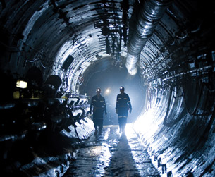

Module 1—Chemical Foundations
Lesson 2 —Ionic Compounds
Get Focused

© Courtesy Cameco Corporation www.cameco.com/media_gateway/photos
Canada is one of the world’s largest producers of uranium. Unfortunately, uranium does not naturally occur in a form usable in CANDU nuclear reactors, so it must be processed. In Lesson 1 you learned that many metals exist naturally in their ionic form and are often combined with non-metallic elements like oxygen. The mining and processing of uranium is a complex industry occurring in Canada and other locations in the world. Processing involves the conversion of uranium into other compounds that allows uranium to perform as a nuclear fuel.
In this lesson you will investigate questions about the structure and properties of ionic compounds, and you will relate these properties to considerations about uranium and the effect that processing uranium could have on the environment.
Essential Questions
ionic bond: the simultaneous attraction among positive and negative ions
intramolecular force: the relatively strong bonds or forces of attraction and repulsion within a molecule; typically covalent bonds
electronegativity: a value that describes the relative ability of an atom to attract a pair of electrons
- Can you recall the principles from Science 10 for assigning names to ionic compounds?
-
How does an ionic bond form?
-
Why do formulas for ionic compounds refer to the simplest whole-number ratio of ions?
-
What are valence electrons? What is electronegativity? What is an intramolecular force?
 Module 1: Lesson 2 Assignment
Module 1: Lesson 2 Assignment
You will complete the Module 1 Lesson 2 Assignment at the end of the lesson.
Remember that the questions that are not marked by the teacher provide you with the practice and feedback that you need to successfully complete this course. You should respond to all the questions and place those answers in your course folder.